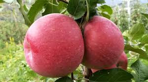

Manzanas Fuji
$1.200
Manzanas Fuji crujientes y dulces, cultivadas en el Valle del Maule.
Perfectas para meriendas saludables o como ingrediente en postres. Estas manzanas
son conocidas por su textura firme y su sabor equilibrado entre dulce y ácido.
Cantidad